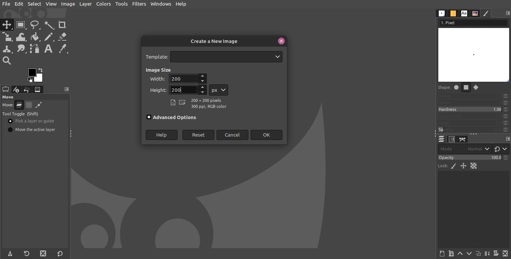

How to Setup Gimp for Pixel Art
by RaincloudDev 2022
Gimp is a super good free program thats been around for years i've known about it since i was in elementary school and have used it for the last five or six years for various projects. It might seem clunky at first, but spend a few hours on it and you too can be A SUPER GIMP. install the program from the website (gimp.org) or use your cli to get the job done. whichever way you choose, be sure you are getting your files from a trusted source. extract the files to the desired location, and you're ready to start manipulating images!
SETUP YOUR PROJECT
on the top left, click file>New. to create a new project
in this window you can set the dimensions of your project in pixels, inches or many other units. you'll also notice there are options for landscape and portrait mode below for this example set your dimensions to 200x200 pixels(px) click OK
SETUP BRUSHES FOR PIXEL ART
You've opened a new project! That mess of tools in front of you will be your friend before you know it! on the left you'll find some of the available tools including Move, multiple selection tools, a crop tool, bucket fill and more. The one we're going to focus on in this article is the paintbrush tool. Notice how maky of the tools have a small arrow in the bottom right of their icon? That means there are even MORE tools to choose from. Right Click the Paintbrush tool and select the pencil tool. you should see the tool title change once the selection has been made.
From here we're going to head back to the top and click Edit>Preferences (Preferences is toward the bottom of the edit menu) Arrow down four times or click "Tool Options" underneath "Scaling" is a dropdown menu titled "Default Interpolation" this menu should be set to "None."